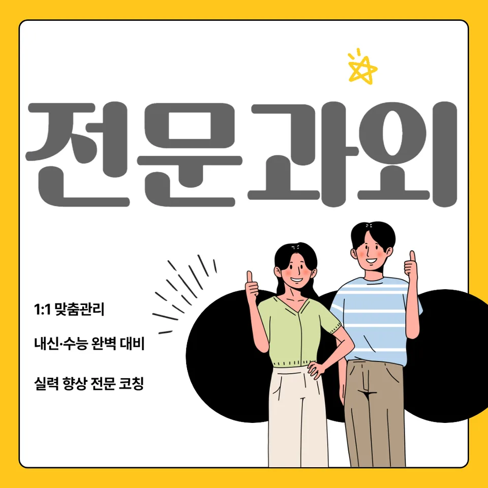

PageType : SUBJECT
URL : /경기도과외/시흥시과외/능곡동과외/능곡동수학과외/
지역 교육환경이 수학 학습에 미치는 영향
능곡동수학과외를 고민하는 학생들은 대체로 ‘수업은 듣는데 왜 문제에서 막히는지’가 분명해지기 시작하는 시점에 찾아옵니다. 지역 학교의 수업 속도, 학습 분위기, 보충 학습이 일어나는 방식은 결국 학생의 수학 학습 리듬을 바꾸고, 그 리듬이 내신 준비와 수행평가 대응까지 이어집니다. 능곡동수학과외가 맞물리는 구간은 특히 학교에서 다룬 개념을 집에서 다시 연결해야 할 때입니다.
동네 학습 문화가 조용한 편이라도, 수학은 결국 과제량과 오답 처리 방식으로 성향이 갈립니다. 어떤 학생은 수업 뒤에 바로 복습을 붙이고, 또 어떤 학생은 시험 전 몰아서 공부습관이 작동합니다. 이 차이는 학습 효율뿐 아니라 사고력의 방향도 바꿉니다. 능곡동수학과외에서는 시험 범위가 바뀌는 시점에 맞춰 복습 주기를 재정렬해 학생이 공부를 ‘버티기’보다 ‘진행’으로 느끼게 만드는 데 집중합니다.
지역별로 상위권과 중위권의 교실 경험이 다르게 누적되는 경우도 있습니다. 같은 학교라도 수업 참여 방식, 질문 빈도, 수업 후 메모 습관이 다르면 개념 이해와 문제 해결 과정이 달라집니다. 능곡동수학과외를 통해 학생이 자신의 학습 환경을 정확히 인식하면, 학교와 가정에서 이어지는 공부 흐름이 끊기지 않습니다.
학교별 평가 방식과 학습 방향
학교마다 내신 비중과 수행평가의 형태가 달라서, 수학 학습 방향도 자연히 달라집니다. 어떤 학교는 계산 정확성과 과정 설명을 강하게 요구하고, 다른 학교는 단원 통합 문제에서 개념 활용을 더 세밀하게 봅니다. 이때 능곡동수학과외의 학습 설계는 ‘답만 맞히는 훈련’이 아니라, 학교가 평가하는 방식에 맞춘 문제 해결 과정 점검으로 이어집니다.
학생들이 가장 자주 혼란을 겪는 지점은 채점 기준이 무엇인지 체감하기 어려울 때입니다. 같은 실수라도 감점 항목이 다르면 학습 우선순위가 달라집니다. 능곡동수학과외에서는 내신과 시험 준비를 할 때 학생이 어떤 부분에서 감점을 반복하는지 확인하고, 오답 분석을 통해 다음 공부의 목표를 구체화합니다. 그 결과 공부습관이 성적 관리가 아닌 학습 관리로 자리 잡습니다.
또한 수행평가는 서술형이나 과정 중심 활동으로 나타나기 쉬워서, 개념을 이해했다고 느끼는 학생도 설명을 반복할 기회가 없으면 약해집니다. 이 과정에서 능곡동수학과외는 개념을 ‘활용’하는 경험을 늘려, 사고력과 문제 해결의 연결을 단단하게 다룹니다.
학생들이 수학을 어려워하는 주요 원인
많은 학생이 수학을 어렵다고 느끼는 시점은 보통 ‘새 단원으로 넘어가며 난도가 갑자기 바뀌는 순간’입니다. 전환이 일어나는 동안 개념의 기반이 흔들리면, 문제를 읽는 속도보다 무엇부터 시작해야 하는지 막히기 쉽습니다. 능곡동수학과외에서는 그 막힘이 계산 미숙인지, 개념 연결의 공백인지, 문제 상황 해석의 문제인지 분류하는 데서 출발합니다.
실수는 대개 일회성으로 보이지만, 실제로는 학습 과정의 패턴에서 반복됩니다. 문제를 풀 때 확인 절차가 없다거나, 오답을 대충 넘기고 다시 같은 유형을 만나면 다시 흔들리는 식입니다. 능곡동수학과외는 오답을 단순히 ‘틀린 문제’로 끝내지 않고, 실수의 원인을 바꾸는 방식으로 복습을 재구성합니다. 복습이 쌓이면 같은 오류가 줄어들고, 공부가 불안에서 통제 가능한 과정으로 이동합니다.
더불어 학생들이 자주 겪는 어려움은 자기주도학습의 시작 단계에서 나타납니다. 계획을 세우려 해도 무엇을 어느 정도까지 해야 하는지 기준이 없으면 멈춰버립니다. 능곡동수학과외는 학생이 스스로 점검할 수 있는 체크 지점을 만들며, ‘다음에 무엇을 할지’가 자동으로 떠오르는 흐름을 만듭니다.
학년 변화에 따른 수학 학습의 차이
학년이 올라갈수록 수학 학습 부담은 단순히 양이 늘어나는 형태로만 오지 않습니다. 연결해야 할 개념의 층이 두꺼워지고, 문제 해결 과정이 더 긴 호흡을 요구합니다. 능곡동수학과외는 학년 전환기에 맞춰 학습 구조를 다시 짜는 데 집중합니다. 예컨대 상위 학년에서는 개념을 이해한 뒤 적용할 때의 선택 기준이 중요해지므로, 학생이 ‘왜 이 방법을 쓰는지’를 말로 정리하게 만듭니다.
시간이 부족해질수록 시험 기간의 학습 패턴이 흔들리는데, 여기서 많은 학생이 계산 연습만 늘리고 정작 사고력 훈련을 줄입니다. 결국 시험 직전에는 답을 고르는 감각이 남아 있어도, 새 형태의 문제에서 무너질 수 있습니다. 능곡동수학과외는 시험 기간 학습 패턴을 완전히 뒤집기보다, 평소 복습과 문제 해결 루틴을 유지한 채 시험 대비의 시간을 효율적으로 재배치하도록 돕습니다.
학년이 바뀌는 시기에는 학부모가 가장 많이 느끼는 교육 고민도 함께 등장합니다. ‘이전처럼 하면 될까’라는 질문이 나오는 이유는, 학생이 같은 방식으로 성장하지 않기 때문입니다. 능곡동수학과외는 학교 수업과 가정 공부의 연결고리를 다시 만들며, 부담이 커지는 시기에도 꾸준한 학습을 유지하도록 학습 계획을 조정합니다.
꾸준한 학습이 실력으로 이어지는 과정
수학에서 실력이 생기는 순간은 하루 성과가 아닌 누적된 확인에서 드러납니다. 개념을 이해하고 활용하는 과정이 반복될수록 학생은 문제를 풀 때 머뭇거리는 시간이 줄어듭니다. 능곡동수학과외는 이 누적을 ‘짧고 자주’의 감각으로 만들려 합니다. 단기 성과에 기대면 복습이 끊기기 쉬운데, 그 끊김이 곧 내신에서의 불안으로 번집니다.
학습 계획을 꾸준히 유지하는 과정은 결국 공부습관의 질을 높입니다. 하루에 오래 하는 방식보다, 수업에서 만난 개념을 다시 끌어와 문제 해결로 연결하는 작은 루틴이 더 오래갑니다. 능곡동수학과외는 학생이 복습의 목적을 이해하도록 돕고, 오답을 분석해 다음 공부의 우선순위를 정하게 합니다.
학생 자신감은 ‘맞히는 횟수’만으로 만들어지지 않습니다. 스스로 점검하고 이유를 찾아내는 경험이 쌓여야 안정됩니다. 능곡동수학과외에서는 자기주도학습이 자라나는 과정을 함께 보며, 학생이 학교 시험에서도 흔들리지 않게 사고력을 유지하는 방식을 정착시킵니다.
문제 해결력을 키우는 학습 습관
문제 해결 능력은 정답률을 올리는 기술이 아니라, 문제를 읽고 선택하는 습관에서 출발합니다. 학생이 문제에서 주어진 조건을 어떤 순서로 바라보는지, 계산을 시작하기 전에 확인하는 습관이 있는지에 따라 과정의 품질이 달라집니다. 능곡동수학과외는 사고력의 흐름을 끊지 않도록, 학생이 스스로 점검할 질문을 만들어 줍니다.
오답은 개선의 신호가 될 수 있지만, 단순 반복은 오히려 학습 시간을 낭비합니다. 같은 유형을 여러 번 푸는 대신, 실수의 원인이 ‘개념의 경계’인지 ‘풀이 순서’인지 ‘표현의 습관’인지 나눠서 접근해야 합니다. 능곡동수학과외는 오답 분석을 중심으로 문제 해결 과정의 오류를 줄이며, 반복을 줄이는 대신 이해를 넓히는 방향으로 설계합니다.
또한 시간 활용이 중요해지는 구간에서 학생들은 ‘빠르게 푸는 연습’만 찾곤 합니다. 하지만 효율은 속도에서만 오지 않고, 불필요한 시행착오를 줄일 때 생깁니다. 능곡동수학과외는 시험 문제를 풀기 전에 필요한 복습이 무엇인지 정리하고, 짧은 시간에도 사고력을 유지하는 방식으로 공부습관을 조정합니다.
복습과 학습 관리가 중요한 이유
복습은 단순히 다시 보는 시간이 아니라, 학습이 유지되는 방식을 확인하는 과정입니다. 학교 수업 후 며칠이 지나면 개념은 어딘가에서 흐려지고, 학생은 그 순간에 다시 막힙니다. 능곡동수학과외에서는 복습을 계획에 포함시키되, 단원 전체를 한 번에 회상하려 하지 않도록 분량과 목표를 조절합니다.
학습 관리가 잘되는 학생은 내신과 시험 범위가 바뀌어도 방향을 잃지 않습니다. 자신이 어느 개념을 확실히 이해했는지, 어떤 유형에서 오답이 반복되는지 기록이 남아 있기 때문입니다. 능곡동수학과외는 학생이 학습 로그를 통해 문제 해결 흐름을 확인하게 하며, 복습이 성과로 이어지는 연결을 경험하게 합니다.
학부모가 자주 느끼는 교육 고민 중 하나는 “공부는 하는데 왜 진전이 느리지?”입니다. 이때 대개 복습의 기준이 흐릿해서 같은 오류가 반복됩니다. 능곡동수학과외는 오답을 중심으로 복습 전략을 다듬고, 학생이 스스로 조절하는 자기주도학습을 자리 잡게 합니다. 그 과정에서 수학에 대한 거부감이 줄어들고, 학습이 관리 가능한 영역이 됩니다.
수학 학습에서 확인해야 할 핵심 요소
능곡동수학과외를 통해 수학 학습의 핵심 요소를 점검하면, 학생의 성장 속도 차이도 더 명확히 다룰 수 있습니다. 같은 수업 경험이라도 개념을 이해하는 방식, 내신 대비 우선순위, 수행평가 준비 태도가 다르면 결과가 달라집니다. 따라서 체크해야 할 항목은 ‘열심히’가 아니라 ‘무엇을 어떻게 확인했는지’로 정리됩니다.
- 학교 수업과 시험 범위에 맞는 학습 계획을 세우고 있는지 확인합니다.
- 개념을 암기하는 데 그치지 않고 문제 해결 과정에 활용하고 있는지 점검합니다.
- 틀린 문제를 다시 풀어보며 실수의 원인을 꾸준히 분석합니다.
- 단기 성과보다 지속적인 복습과 학습 습관을 유지하고 있는지 살펴봅니다.
마지막으로 사고력과 문제 해결의 성장은 한 번의 설명으로 끝나지 않습니다. 능곡동수학과외는 학교와 가정에서 이어지는 학습 환경을 연결해, 학생이 스스로 공부습관을 조정하는 경험을 쌓게 합니다. 시험 기간에는 계획이 흔들리기 쉬우니, 평소 복습과 오답 관리가 얼마나 단단한지부터 확인하는 흐름이 중요합니다.
자주 묻는 질문
능곡동수학과외는 어떤 학생에게 먼저 도움이 되나요?
수업 후 복습이 끊기거나, 내신에서 특정 유형만 반복해서 틀리는 학생처럼 학습 관리가 필요한 경우에 특히 효과가 큽니다.
학교 내신과 수행평가 준비를 수학 학습에 어떻게 섞나요?
단원별 개념 이해와 문제 해결 과정을 유지한 채, 채점 기준에 맞는 풀이 표현과 오답 정리를 수행평가 성격에 맞춰 조정하는 방식이 좋습니다.
개념이 약한 학생도 학습 흐름을 따라갈 수 있을까요?
가능합니다. 핵심은 빠른 진도보다, 개념을 이해하고 활용하는 연결 고리를 단계적으로 복구하며 복습 주기를 만드는 것입니다.
오답을 분석해도 계속 같은 실수를 반복하면 어떻게 하나요?
실수의 원인을 유형화해 기록을 남기고, 같은 형태를 반복하기보다 원인에 해당하는 확인 절차를 훈련하는 방향으로 바꾸는 것이 필요합니다.
자기주도학습을 시작할 때 가장 먼저 잡아야 할 습관은 무엇인가요?
오늘 학습의 목표와 내일 복습의 기준을 함께 정하는 습관입니다. 능곡동수학과외에서는 이 기준을 학생 언어로 정리해 공부습관이 안정되게 합니다.
